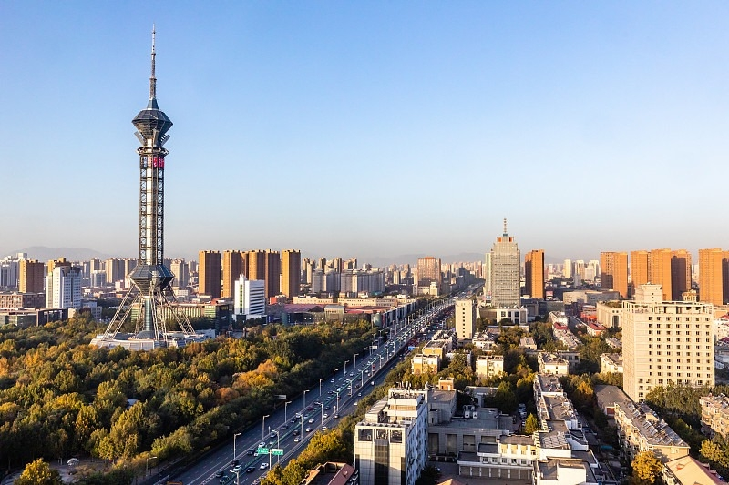

🌆 Urban Identity · Transport Hub
As the capital of Hebei Province, Shijiazhuang is a key railway and highway artery. It connects northern China and mirrors the rapid yet grounded development of modern cities.
Unlike famous destinations, it shows an unpolished, honest face of urban growth.